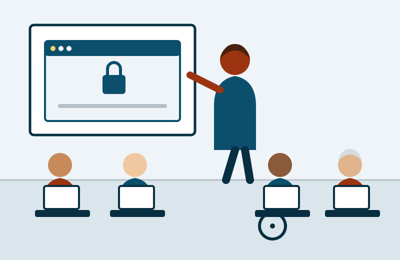

Informática básica
Primeiros passos no computador: teclado, mouse, arquivos, pastas e digitação de textos.
- Carga horária: 20 horas
- Turmas: terças e quintas, das 14h às 16h
- Vagas por turma: 15
Inclusão digital gratuita para a nossa comunidade
O Conecta Bairro é um projeto social sem fins lucrativos criado em 2019 no bairro Vila Esperança. Nossa missão é reduzir a exclusão digital oferecendo oficinas gratuitas de informática para jovens em busca do primeiro emprego e para pessoas idosas que querem usar a internet com autonomia e segurança.

Todas as oficinas são gratuitas, presenciais e com material didático incluído.
Primeiros passos no computador: teclado, mouse, arquivos, pastas e digitação de textos.
Como reconhecer golpes, criar senhas fortes, usar aplicativos de banco e proteger seus dados.
Montagem de currículo, criação de e-mail profissional e cadastro em plataformas de vagas.
“Eu tinha medo de usar o aplicativo do banco. Hoje pago minhas contas sozinha, sem depender de ninguém.”
“Fiz meu primeiro currículo na oficina e três semanas depois fui chamado para a entrevista que me deu o emprego.”
Preencha os dados abaixo para reservar sua vaga. Os campos marcados com asterisco (*) são obrigatórios.